Cleaning: results by section and planning the days
The council, started again from scratch. Three whole designs, each drawn inside the book's real pages: the top bar, the Cleaning page, the forms and the admin panel are the book's own; the new parts are drawn in and do nothing when tapped. Nothing in the book has changed. The weights, kinds, people and counts are made up.
Round 1: Build smaller, 6 of 6. Round 2: six reviewers are scoring these now. No recommendation yet.A. On the job: changes the least
Everything happens in the forms you have. The book checks and suggests, one job at a time. It never moves a job.
Weigh and pick a day
In the job's own Edit form.
- How long it takes: Light, Medium or Heavy.
- Each day says what that section already has that night.
- A suggested day, not chosen until you press it.
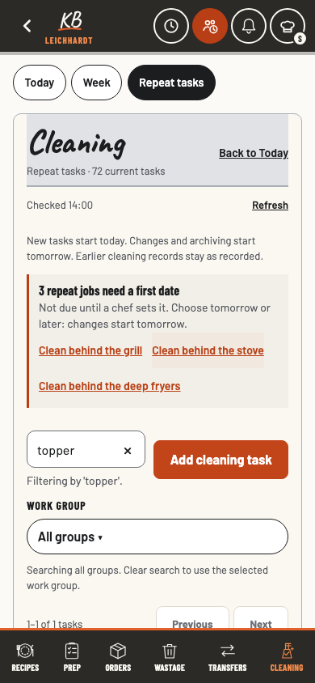
Whole page · On a laptop

What to look at
A list on Repeat tasks.
- What each day takes, in words.
- Jobs with no weight, a heavy job on a medium day, jobs with no day.
- 60 taps to weigh the 20 jobs.
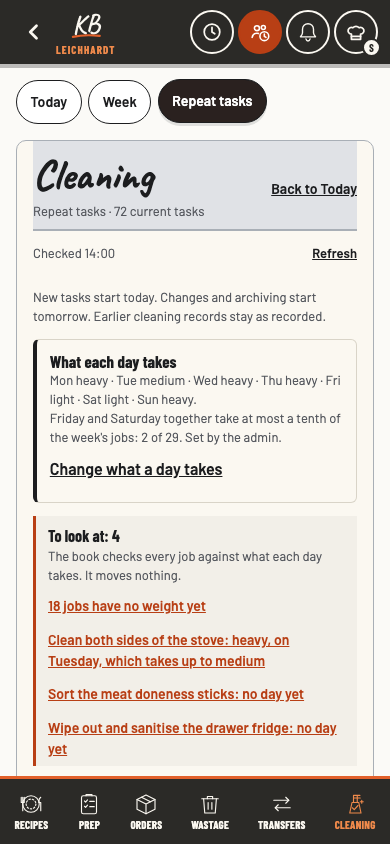
Whole page · On a laptop

The results
In Reports, Records, for that night.
- Each section: done out of due.
- What was not ticked by midnight.
- Who was rostered, one tap behind.
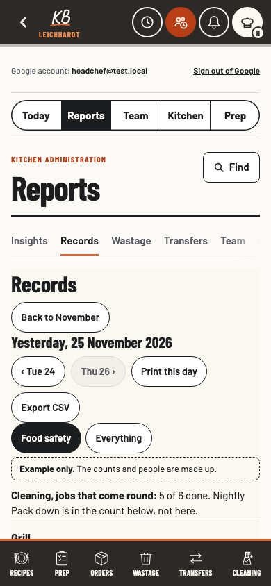
Whole page · On a laptop

B. One list: rethinks the flow
One view inside Repeat tasks. Every job that comes round is a row, by section. The plan lands in the same list as "now, was".
Weigh
Three chips on every row, one Save.
- 22 taps to weigh the 20 jobs.
- A job with no weight is never planned.
- What each day takes, on top.
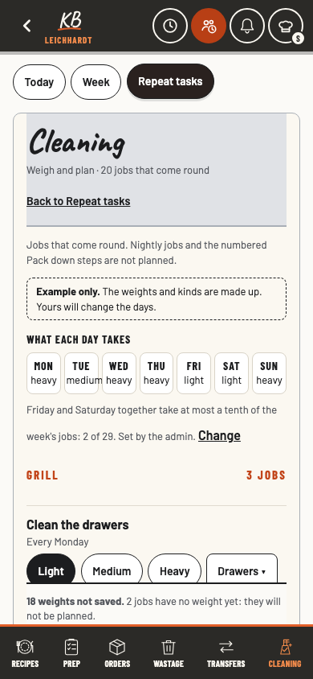
Whole page · On a laptop

Plan the days
Only the rows that change.
- Moves as few of your days as the rules need: 3 of 15 here.
- Each row: the new day, the old day, the reason, and a button to keep the old day.
- One Save.
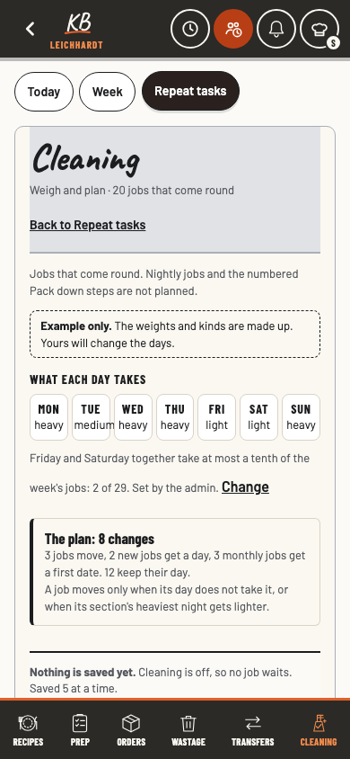
Whole page · On a laptop

The results
A new Reports page, Cleaning.
- One row per section for the last 4 weeks.
- Opens to each job, its dates and who did it.
- An eighth Reports tab: your call.
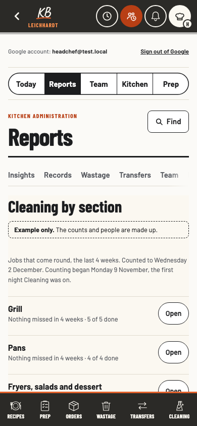
Whole page · On a laptop

When a save stops part way, each row says so in words: Saved, Not sent, Refused, Waiting, No day fits.

C. Set up once: removes the most friction
Four steps on Repeat tasks while Cleaning is switched off. Once it is on, the steps go, and the job form suggests a day for each new job.
Step 1: weigh
One section at a time.
- Three chips on every row.
- Save Grill, then Pans.
- 25 taps to weigh the 20 jobs.
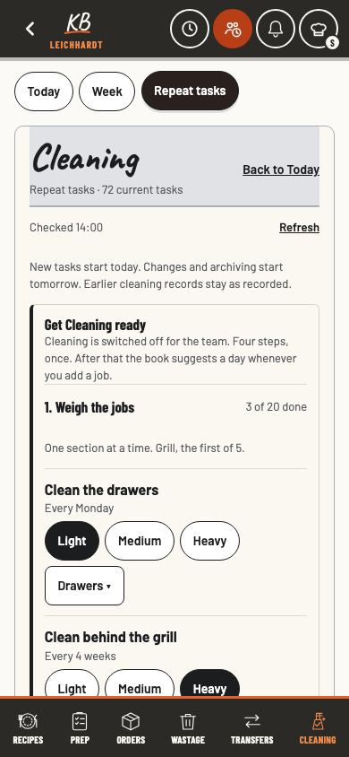
Whole page · On a laptop

Step 3: see the week
The whole week, by section.
- Cleaning is off, so the book plans every job and nobody waits: 10 of 15 change day here.
- Each night's weight, was and now.
- Then step 4 switches Cleaning on.
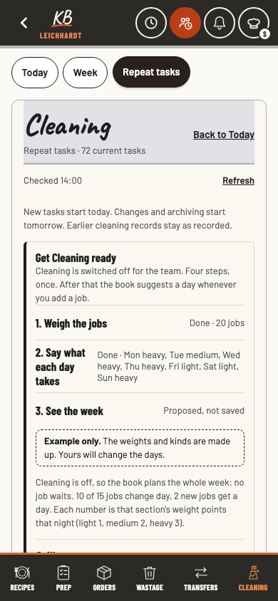
Whole page · On a laptop

After that: a new job
The form suggests a day.
- A suggested day, not chosen until you press it.
- It warns that today means tonight.
- No plan page once Cleaning is on.
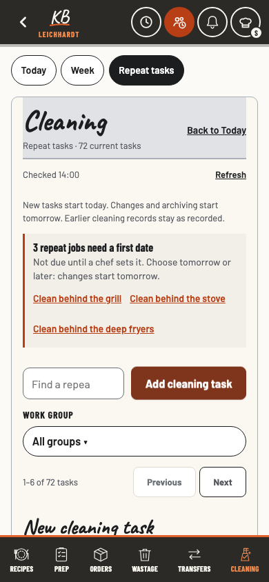
Whole page · On a laptop

The same in all three
The morning flag
One row in your Inbox.
- "Not ticked", the section, the job and the date.
- It names no person.
- Jobs that come round only, until you say otherwise.
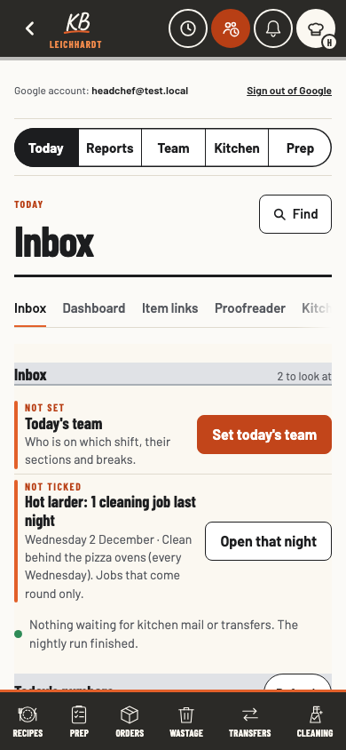
Whole page · On a laptop

Design C adds one line
In today's numbers.
- Cleaning, Wednesday: 5 of 6 jobs that came round.
- Opens that night in Records.
- No new report page.
 Whole page · On a laptop
Whole page · On a laptop


A cook's page
Unchanged in every design.
- 5 whole rows on the first screen, as today.
- No weight, no kind, no flag on it.
- 52 rows, as today.
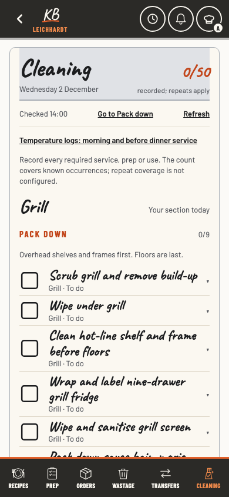
Whole page · On a laptop

How they differ
- Where a job is weighed: A in its own form. B in one list. C in a setup step, a section at a time.
- Who moves a job that has a day: A only you, by hand. B the book proposes the fewest moves, any time. C the book replans the whole week once, before Cleaning is switched on.
- Where you read the results: A in Records, that night. B on a new Reports page, 4 weeks. C in the Inbox, then Records.
How the pictures were made and every count: designs/build.cjs, designs/measurements.json. The first council's page: first-council.html.